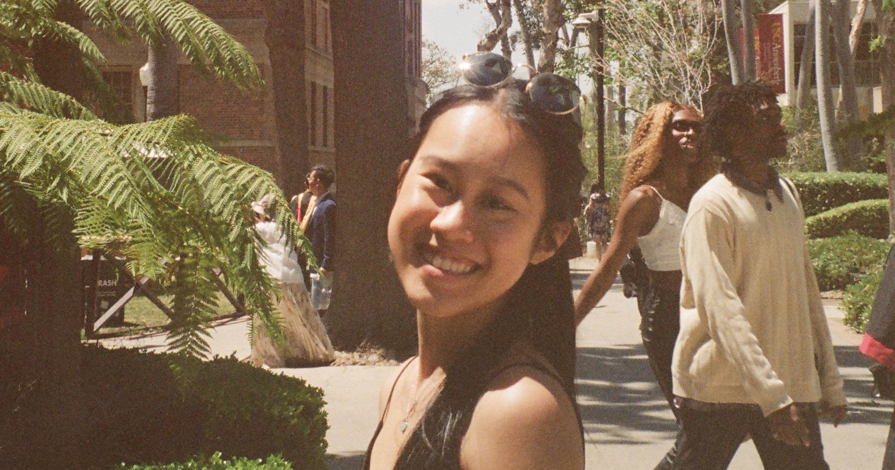

Hi there, I'm Valerie ᵕ̈
Thanks for stopping by!
My design journey started in industrial design classes I took throughout middle and high school. In these classes, I fell in love with the process of developing my unique take on a product, reimagining it, and working hands-on in the studio to turn it into a tangible product.
Over the years, I dabbled in other passions - from marketing, entrepreneurship, and data analytics through my education at USC, to my pandemic hobby of web design and development. These experiences have allowed me glimpses into many worlds and shaped my identity as an interdisciplinary creative.
Lately, I have been enjoying leveraging my multi-hyphenated skillset to create digital product experiences that impact our everyday lives. I hope to continue working on innovative products that redefine user interactions for the better.